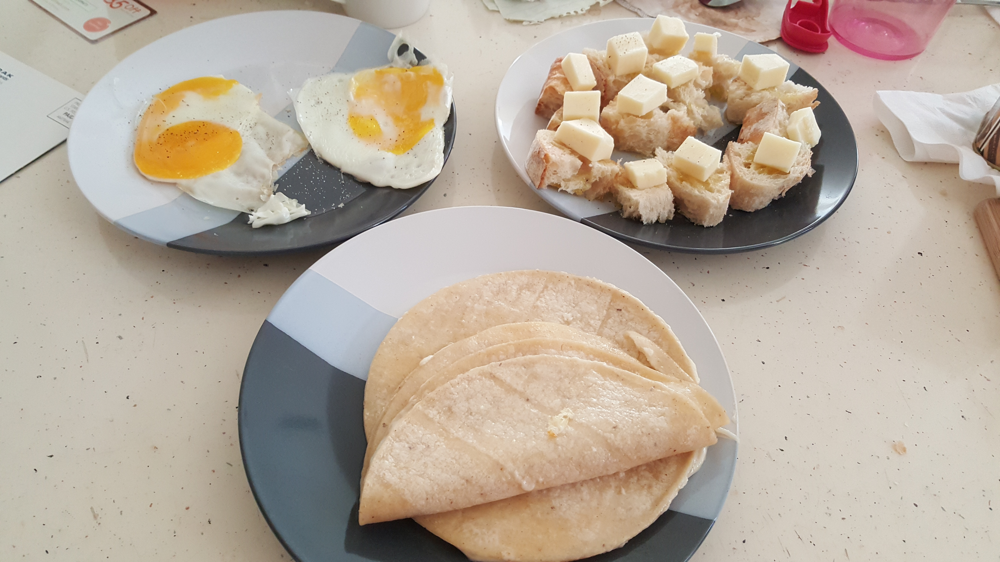
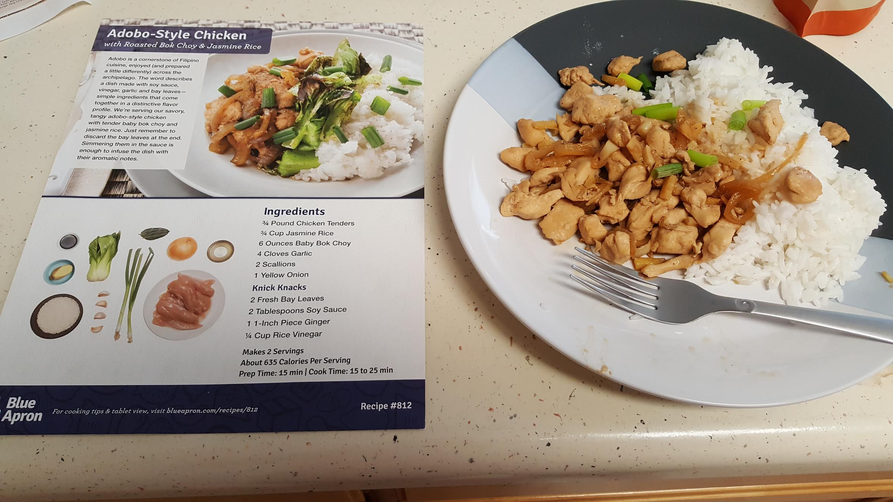

?? March 2016 - Blue Apron Pt 6.
Nonsense Part 2

More making food before ingredients went bad. Pizza dough with avocados, onions, tomato paste, mozzarella, and some other kind(s) of cheese I forget.
Also, I'm going to be on Blue Apron hiatus for a while. I've had my fill of making food more complicated than sandwiches for a while. I may or may not find something else to fill this space with for the meantime.
Difficulty Preparing
Fairly easy, just had to cut a bunch of things.
Amount Meal Resembles Pictures
N/A, looks like a pizza though.
Deliciousness
It was alright. Not amazing. Avocado didn't really work out.
Conclusion
OK for being made up on the spot. Fairly happy with the turning dough into a pizza shape part.
?? March 2016 - Blue Apron Pt 5.
Nonsense Part 1
I've been too lazy to make Blue Apron meals for too long and the food was starting to go bad, so I rushed to put it together and make something approaching food. Result: two eggs, jack cheese and olive oil on baguette pieces, and corn tortillas fried with mayo and filled with jack cheese (alternatively known as really bad quesadillas).
Also this happened over a week ago and I've been way too lazy to post, oops.
Difficulty Preparing
Really easy. Hardest part was cutting off the bits of the bread that had started to mold.
Amount Meal Resembles Pictures
N/A. The eggs look like eggs, I guess?
Deliciousness
Eggs were fine, bread was delicious (I love both bread with olive oil and bread and cheese). Tortillas were about as good as I expected (that means "not great").
Conclusion
Worked out pretty well for making it up as I went along.
09 April 2016 - Blue Apron Pt. 4
Adobo-Style Chicken Without Bok Choy (and rice)
Difficulty Preparing
Not bad. My bok choy seemed like it had gone bad (I have a Blue Apron backlog at this point), so I tossed it, which made preparation a bit easier. There was a bunch of chopping to do for this meal, but I think I'm actually getting the hang of chopping veggies (without also chopping my fingers), so it wasn't that bad. I had to improvise slightly with the rice, because I had some extra from a previous Blue Apron meal and wanted to make more, but that worked out.
Amount Meal Resembles Pictures
Looks pretty good to me, except for the fact that the bok choy is missing. As far as appearance goes, the chicken and rice are the important parts here (as I see it), and I got those right.
Deliciousness
I enjoyed this. The chicken was tasty, and the scallions added a bit of flavor to the meal. I think the sauce could have been better (to be clear, I'm laying the blame on myself here, not on the sauce itself). I think I mostly just tasted the vinegar. The rice was okay, but bland. Because I made extra, I'll be having some of that by itself in a couple days or so, so I guess we'll see how much it holds up by itself.
Conclusion
Pretty good!
03 April 2016 - Blue Apron Pt. 3
Triple Pork Mazemen with Roasted Garlic & Pea Tips

Difficulty Preparing
Fairly easy. Only a few veggies to chop. Most of the difficulty was the timing of cooking the various ingredients. I finished cooking the noodles before the ground beef/sauce was ready, so I let them set, and they turned into one big blob. I had to chop them up again before I could mix them properly. I also didn't have aluminum foil to wrap and roast the garlic called for in the recipe, so I had to go out and buy that before I could prepare the meal
Roasting the garlic was fun, though. It turned out fairly well and was pretty easy.
Amount Meal Resembles Pictures
I think it's basically spot-on. Presentation could use a touch of work, but whatever.
Deliciousness
I've only had one bowl as of this writing. It was pretty good! I think I might not have done the sauce right, because I don't think it really added much flavor to the meal. Pork was fine, noodles were fine, veggies weren't bad. We'll see how the rest holds up after being refrigerated. Also, I think I prefer mazemen to ramen. I've never been a fan of food you have to drink.
Conclusion
Not Bad ™
27 March 2016 - Blue Apron Pt. 2
Hoison & Shittake Burgers With Sweet Potato Spears

Difficulty Preparing
Not that difficult. Lots of veggies to prepare, the mushrooms had to be soaked (and later thinly sliced), and my ground beef was in the freezer, so it had to be defrosted. That was all pretty easy, though.
Amount Meal Resembles Pictures
I think it came out right. My potato spears were a bit overdone, but I think they were fine.
Deliciousness
I've never met a burger I didn't like, so this boded well from the start. The potato spears were alright. I would have liked cheese somewhere on the burgers, but they were fine without it. I didn't really taste the mushrooms, though I'm sure they added something.
Conclusion
Would eat again, would make again.
27 March 2016 - Blue Apron Pt. 1
I'm going to try to turn this into a Blue Apron cooking blog for lack of better ideas.
Kimchi & Barley Miso Ramen

Difficulty Preparing
Lots of stuff to do at the same time. Lots of veggies to prepare, lots of water to boil. My stove doesn't boil water well unless I turn the heat up way high, and my pots and pans are ceramic and tell me I'm not supposed to do that. So that was annoying. I didn't cook the eggs properly, so no eggs.
Amount Meal Resembles Pictures
Not great. I didn't realize how think the "matchstick cut" pears had to be, and I'm not sure how well I prepared the kimchi/broth. Eh.
Deliciousness
It tasted alright. The noodles were a bit mushy (possibly undercooked). I liked the scallions. I think I've had them before but never prepared a meal with them. I liked the pears, and the broth was fine.
Conclusion
Would eat again, would prefer that someone made for me. I think I need a lot more practice with a kitchen, and maybe more patience.
08 March 2016 - Rebuilt website!
I decided to rewrite my website. I was inspired by being forced into frontend development at work, and also by this post, and also by this site. My first goal was to make my site look at least somewhat decent. I liked the old design at first, but in retrospect it wasn't very good. I think this is better - you be the judge! The blogpost styles kind of look like garbage. I'll look into that later. Maybe I'll use some markdown.
My second goal was to base the site on pure HTML5 and CSS3, no JavaScript, no legacy stuff. I didn't have much before, just some random stuff from HTML5 Boilerplate that I wasn't really using. I've cleared that out. I also redid my styles from scratch, in SCSS this time, instead of plain CSS. This made writing the styles a bit nicer, and let me use Sass to minimize the final main.css. I don't know how much of a difference that made in final size and download speed, but it made me happy.
Overall, it was fun messing with my site, again. It's mostly just sat here without any changes unless I had to correct blatant lies (my 'about' page still called me a student for a while after I graduated), or I wanted to throw random text files into the site (they're kind of like easter eggs!). I don't know if this will motivate me to work more on the site or not. I'd like to be the kind of person that does regular blog posts, but I don't know if I can motivate myself to do that. I do better sending out short thoughts I don't have to spend much time thinking about (see my Twitter). We'll see. Thanks for reading!